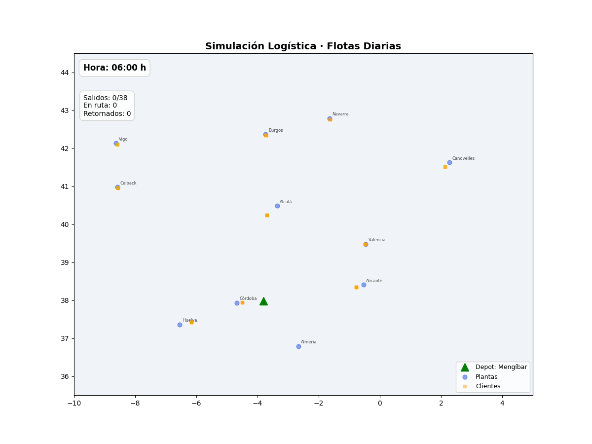

Logistics Optimizer
MC-VRPB con Backhauling Multi-Planta
v5.2
MC-VRPB con Backhauling Multi-Planta
v5.2
Rutas Totales Generadas
14
Distancia Total (km)
11,225.82
(Haversine (estimacion))
Plantas Visitadas
14
Entregas Realizadas
19
Ahorro Km Vacíos
~31.5%
ℹ Comparativa de kilómetros vacíos al utilizar la estrategia de Backhauling en MC-VRPB frente a trayectos tradicionales (GPS Real).
| Ruta (Planta) | Distancia Total (km) | Km Vacíos (Tradicional) | Km Vacíos (MC-VRPB) | Mejora (%) | Emisiones CO₂ | Coste (€) | CO₂/€ | Horas |
|---|---|---|---|---|---|---|---|---|
| Alcalá | 566.19 | 280.63 | 111.99 | +60.1% | - | - | - | - |
| Alcalá (Muelle 2) | 561.28 | 280.63 | 138.82 | +50.5% | - | - | - | - |
| Alicante | 577.71 | 288.75 | 168.61 | +41.6% | - | - | - | - |
| Córdoba | 155.33 | 76.68 | 22.84 | +70.2% | - | - | - | - |
| Huelva | 502.68 | 250.95 | 96.49 | +61.5% | - | - | - | - |
| Burgos | 981.41 | 487.92 | 394.50 | +19.1% | - | - | - | - |
| Navarra | 1,130.63 | 564.75 | 504.34 | +10.7% | - | - | - | - |
| Valencia | 678.56 | 334.08 | 192.56 | +42.4% | - | - | - | - |
| Almeria | 333.82 | 166.58 | 1.43 | +99.1% | - | - | - | - |
| Canovelles | 1,316.99 | 658.08 | 486.63 | +26.1% | - | - | - | - |
| Celpack | 1,057.11 | 527.99 | 394.83 | +25.2% | - | - | - | - |
| Celpack (Muelle 2) | 1,058.54 | 527.99 | 395.15 | +25.2% | - | - | - | - |
| Celpack (Muelle 3) | 1,060.44 | 527.99 | 397.81 | +24.7% | - | - | - | - |
| Vigo | 1,245.14 | 617.43 | 523.11 | +15.3% | - | - | - | - |
Muestra cómo DataManager filtra clientes mediante radio y elipse.
Análisis de cómo el parámetro SORTING_STRATEGY determina qué cliente se prioriza.
Vista interactiva del Dashboard de Flota Dedicada. Haz clic en cada ruta para ver el desglose punto a punto.
Análisis econométrico SOTA mediante modelos de doble logaritmo (Elasticidades).
| Variable | Coef. | P-valor |
|---|---|---|
| const | 1.7054 | 0.0000 |
| log_Distance | 0.4811 | 0.0000 |
| log_Pallets | 0.4958 | 0.0000 |
| Carr_TC ARMIÑO CARGO,S.L. | -0.1247 | 0.0000 |
| Carr_TC GRANXATRANS LOGISTICA,S.L. | 0.1272 | 0.0000 |
| Carr_TC HERRUZO GONZALEZ, JACINTO | 0.0811 | 0.0000 |
| Carr_TC TRANSPORTS J BONET, S.L. | -0.0649 | 0.0000 |
| Carr_TC TRANSROMAN S.L. | 0.1490 | 0.0000 |
| Type_TM Third-party_FTL/CTL | -0.4232 | 0.0005 |
| Type_TM Third-party_LTL | -0.8028 | 0.0000 |
R² Adj: 0.3106
Durbin-Watson: 0.95
N: 190,557
| Variable | Coef. | P-valor |
|---|---|---|
| const | 1.6855 | 0.0000 |
| log_Distance | 0.4831 | 0.0000 |
| log_Pallets | 0.4907 | 0.0000 |
| Type_TM Third-party_FTL/CTL | -0.3895 | 0.0013 |
| Type_TM Third-party_LTL | -0.7825 | 0.0000 |
R² Adj: 0.3096
Durbin-Watson: 0.95
N: 190,557
| Variable | Coef. | P-valor |
|---|---|---|
| const | 2.6134 | 0.0000 |
| log_Distance | 0.5742 | 0.0000 |
| Type_TM Third-party_FTL/CTL | -0.2111 | 0.0928 |
| Type_TM Third-party_LTL | -1.3282 | 0.0000 |
R² Adj: 0.2572
Durbin-Watson: 0.98
N: 190,557
[*] p<0.1, [**] p<0.05, [***] p<0.01.
Heterocedasticidad controlada vía errores robustos.

Muelles de Carga
2
Tiempo Carga Base
40 min
Tiempo de Atado de Bobinas
30 min
Velocidad Promedio
80 km/h
Volumen típico de envíos extraído (promedio), que dicta la flota inicial en el simulador:
| Planta | Camiones/Día |
|---|---|
| Celpack | 3 |
| Alcalá | 4 |
| Alicante | 5 |
| Almeria | 5 |
| Burgos | 4 |
| Canovelles | 2 |
| Córdoba | 3 |
| Navarra | 2 |
| Huelva | 5 |
| Valencia | 3 |
| Vigo | 2 |
| Total Flota | 38 |
Fuente: data/n_camiones_a_plantas_diarios.xlsx